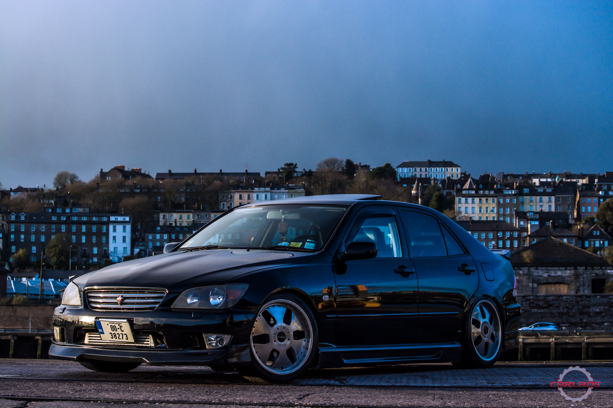
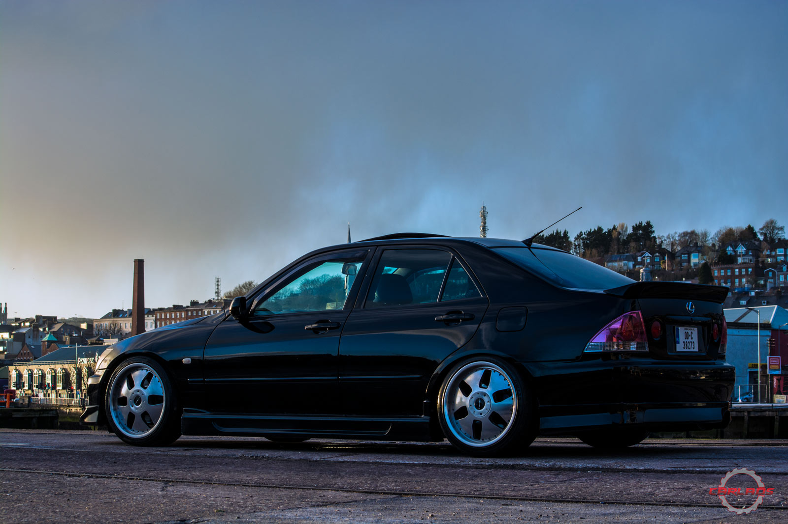
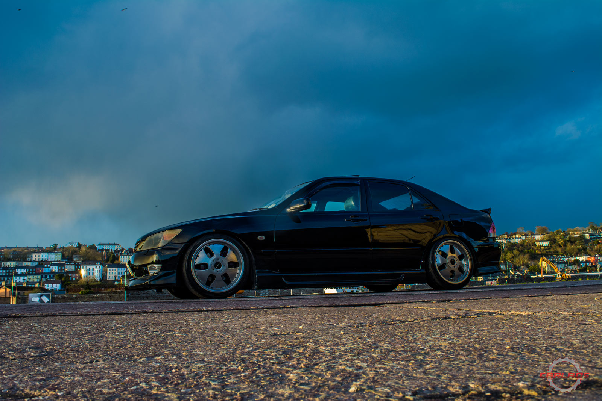
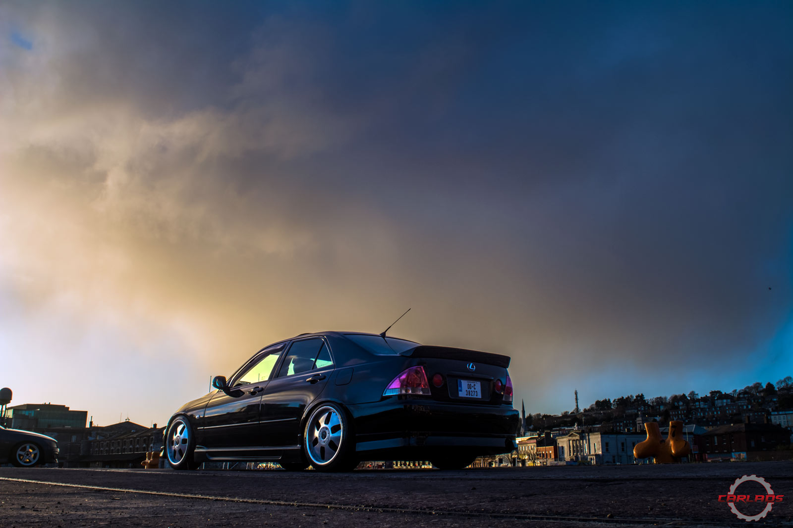

Supercharged Lexus
The first generation Lexus IS200 came out for the European Market back in 1999.The IS was introduced as an entry-level sport model slotted below the ES in the Lexus lineup. It was supposed to compete against it's German rivals in the same class but it's wasn't too popular at first do to it's high purchasing price.
The Japan version, called the "Toyota Altezza" was far more successful, mainly because of the power that wasn't available for us Europeans. Still, car enthusiasts saw the potential. A few Altezzas were imported a while after and, after a bit of depreciation, the IS200 began to be modified. With a bit of work, people now had a fast RWD, comfortable, good looking car.
Zach, the owner of this Lexus, had not one but four IS200s, one Altezza too, so one can say that he's got "a thing" for them. His first one didn't get loads of mods, he does remember the spoiler he put on this car. Bought from a friend with 70 euros and later one realizing it was in fact a much, much more expensive one.
He moved on from the Toyota/Lexus brand for a while, but he couldn't stay away for too long. This last Lexus was bought from one of his friends. Low mileage car with some lowering springs, perfect canvas for his new ideas.
He wanted something different, something that not a lot of people did to their Lexus before. The plan was to supercharge it, this being an idea that was always in his head, just screaming to get out.
It took about eight months of research and parts gathering until the car was finally done. All boxes were ticked except the LED back lights he always wanted. The Viennas were purchased and installed just days before the shoot for this article was done.
The car is now a sort of a Frankenstein, a good looking one but still a monster. The compressor itself came from a Merc CLK, Supra MK4 tensioner, bypass valve from a Mini Cooper, fuel cut from a Defender with universal silicone bends and joiners, custom inlet&outlet.
Most of the work was done by himself on his driveway. Everytime he got stuck, he would write to the person who's design he was following, another Lexus fanatic from Bulgaria.
This was supposed to be the car that he would never sell, but Zach, having done everything he wanted to this one, felt the time has come to move and and start another project. The "offer he couldn't refuse" was made just one hour after we shot the material for the article, and it was gone, just like that.
In his own words:
I very rarely drink and I don't go out, so that was my thing. Sink the shoe for a bit let off and feel the buzz. It wasn't a rocket ship but it did move. Best parts for me, I suppose is hard to single out, the accomplishment of a passion, I guess, and perseverance to see it through really. Oh! and everyone will tell you that spoiler was my baby, I bought a f#ckin car back just for it.
Well Zach, whenever you miss it, you can just come to this page to look at the images and watch the video bellow. Thanks for sharing this with us!